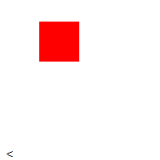

Contenido de la Lección 1: Definición de HTML
¿Qué es exactamente HTML5?
Hay que definir 2 conceptos de HTML5 distintos. El primero hace referencia al estándar más reciente del
lenguaje de marcado HTML, recomendado por el World Wide Web Consortium (W3C), que incorpora nuevas
etiquetas de marcado.
Por su parte, también se puede hacer referencia a toda la familia HTML5, que
incorpora nuevas tecnologías, tales como CSS3, Javascript, nuevas APIs(Application Programming Interfaces)
que pueden ser usadas en conjunto con Javascript.
Nuevas etiquetas en HTML5
El estándar HTML5 incorpora un buen número de etiquetas nuevas y modifica etiquetas ya existentes, dándole más
herramientas a los programadores para la creación de sus sitios web. A continuación unos ejemplos.
| Etiqueta nueva | Atributos | Descripción |
|---|---|---|
| <article> | Atributos globales | La etiqueta <article> especifica contenido independiente y autónomo. |
| <aside> | Atributos globales | La etiqueta <aside> define contenido aparte del contenido en el que se coloca. |
| <datalist> | Atributos globales | La etiqueta <datalist> especifica una lista de opciones predefinidas para un elemento <input>. |
| <details> | Atributos globales y open | La etiqueta <details> especifica detalles adicionales que pueden ser vistos o ocultados por el usuario. |
| <embed> | height | src | type | width | La etiqueta <embed> define un espacio para una aplicación externa o contenido interactivo. |
| <mark> | Atributos globales | La etiqueta <mark> resalta contenido dentro de la etiqueta como con un marcador. |
| <progress> | max | value | La etiqueta <progress> ofrece una barra de progreso que puede interactuar con Javascript. |
| <section> | Atributos globales | La etiqueta <section> define secciones dentro de un documento HTML, como los headers, footers, navs, etc. |
En total, HTML5 agrega 23 etiquetas nuevas, modifica 7 y elimina 15.
Novedades de HTML5 importantes
Dentro de las etiquetas previamente mencionadas, resaltan un par por su utilidad para hacer sitios interactivos La especificación HTML5 incluye etiquetas que nos permiten integrar contenidos multimedia sin necesidad de complementos de navegador. Las etiquetas <video> y <audio> sirven para integrar video y audio en las páginas web de la misma forma que actualmente se hace con los archivos de imagen utilizando la etiqueta <img>.
Ejemplos:
Para insertar un video se utiliza la siguiente etiqueta:
<video src="catz.mp4" width="400" height="300"></video>
Para insertar un audio se utiliza la siguiente etiqueta:
<audio src="high_seas_rip.mp3" controls preload="auto" autobuffer></audio>
El Canvas
El elemento de Canvas es parte de HTML5 y permite la representación dinámica y programable de formas 2D e imágenes de mapa de bits. Es un modelo de procedimiento de bajo nivel que actualiza un mapa de bits y no tiene un gráfico de escena incorporado, pero a través de WebGL permite mostrar formas e imágenes en 3D. HTML5 Canvas también ayuda a crear juegos en 2D.
Un Canvas consiste en una región dibujable definida en código HTML con atributos de alto y ancho. El código JavaScript puede acceder al área a través de un conjunto completo de funciones de dibujo similares a las de otras API 2D comunes, lo que permite gráficos generados dinámicamente. Algunos usos anticipados del lienzo incluyen la creación de gráficos, animaciones, juegos y composición de imágenes.
Ejemplo de Canvas
<canvas id="ejemplo" width="200" height="200" >
This text is displayed if your browser does not support HTML5 Canvas.
</canvas>
Usando Javascript podemos dibujar con este canvas.
var example = document.getElementById('ejemplo');
var context = example.getContext('2d');
context.fillStyle = 'red';
context.fillRect(30, 30, 50, 50);
Lo que da como resultado:
APIs
Además de especificar el marcado, HTML 5 especifica las interfaces de programación de aplicaciones de scripting (API) que se pueden usar con JavaScript. Las interfaces existentes del Modelo de Objetos del Documento (DOM) son características extendidas y de facto documentadas. También hay nuevas API, como:
- Canvas
- Geolocalización
- WebAudio
- WebSQL
CSS3 y nuevos estilos
El estándar CSS3 forma parte de las tecnologías de la familia HTML5, que incluye nuevas tecnologías que pueden ser usadas
para crear páginas Web más vistosas.
Entre las nuevas herramientas con la que contamos, destacan las Transformaciones 2D y 3D, aplicables a los elementos
de una página web, así como Fondos, bordes, colores RGBa, gradientes, sombras y esquinas redondeadas.
Conclusiones
1847972 Eduardo Salazar Treviño
Para ser una página con varios años de antigüedad, considero que el contenido es bastante adecuado para darnos una introducción
a HTML5 y todas las tecnologías que incorpora con el estándar.
Lo que más me llamó la atención fue la mejora e inclusión de diversas
APIs para poder tener más herramientas disponibles, tales como las APIs de Video y Audio para poder reproducir contenido multimedia de una
manera mucho más sencilla. Sin duda alguna, HTML5 cumple con su objetivo de hacer la creación de páginas Web más sencillas y completas.